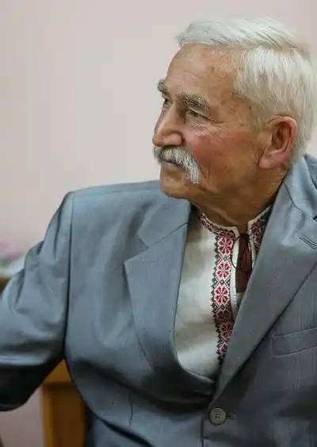
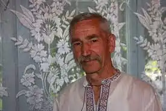

Михась (Михайло) Михайлович ТКАЧ народився 19 вересня 1937 року в селі Сахнівка Менського району на Чернігівщині. Після закінчення семирічки деякий час працював у колгоспі обліковцем рільничої бригади, служив у армії. Демобілізувавшись, закінчив вечірню Ленінівську середню школу, Ніжинське училище механізації сільського господарства, заочно Ніжинський технікум механізації, працював трактористом, помічником бригадира тракторної бригади. У 1964 році приїхав до Чернігова. Спочатку поглиблював свої знання в жанрі живопису самотужки, а згодом вступив до Московського університету мистецтв на факультет малюнка і живопису (заочно). Працював на посаді художника-реставратора в історичному музеї імені Василя Тарновського, художником— оформлювачем на заводі синтетичного волокна, у будівельному тресті. Після закінчення Остерського будівельного технікуму — майстром, виконробом, інженером-проєктувальником. Створював проєкти індивідуальних будинків. Видав технічну книгу "Ремонт і спорудження будинків на замовлення населення". Тоді ж з'явилися перші образки, новели. Дебютував у журналі "Вітчизна" у 1973 році оповіданням "Неспокій". Перша книга прози "Сонячний полудень" побачила світ у видавництві "Молодь" у 1979 році. На початку 90-х років ХХ століття Михась Ткач був активним учасником заходів, спрямованих на утвердження нашої незалежності, працював відповідальним секретарем Товариства української мови ім.. Т. Шевченка( Нині "Просвіта".) Тоді ж ініціював об'єднання місцевих літераторів і за підтримки колег створив незалежну громадську організацію — літературну спілку "Чернігів" та заснував журнал "Літературний Чернігів".
Автор книг прози "Сонячний полудень" (1979), "Світле диво" (1987), "Дике поле" (1994), "Гірка ягода калини" (1996), "Веселий Штанько" (1997, перевидання, 2007) "Відлуння душі" (1999), "Багряні громи" (2004), "Осінні акорди" (2006), "На зламі століть" (2007), "Спадок" (2011), "Зерна слова" (2012), "Хочеться грози", "Зойк сови" (обидві – 2015), "Малярство" (2016), "У проміжках дерев" (2018), "Твори в трьох томах" (2019); книг для дітей "Святковий ранок" (1993), "Зимові сюрпризи" (2002) "Ласий ведмідь" (2005), "Анюта" (2007). Окремі твори перекладені англійською, російською і болгарською мовами.
Співупорядник антологій "Чернігівська Шевченкіана", "Ужинок за сорок літ" (твори письменників Чернігівщини), "Толока". Упорядник збірки спогадів "Моє життя" емігранта Павла Пришиби та життєпису "Ганна Барвінок". Твори М. Ткача увійшли до хрестоматій, антологій та посібників з української літератури. Хрестоматія " Українська література для дітей" (Ласий ведмідь, Як кіт перехитрив вовка, Веселий Штанько, Зимові сюрпризи) Рекомендована міністерством освіти для вищих навчальних закладів. Упорядник Оксана Гарачковська. Антологія українського автографа "Віщі знаки думки, серця і руки."(Проєкт Володимира Качкана), "Антологія творів лауреатів премії ім.. М. Коюбинського"(Зоряна ніч, Літнього вечора, Сині очі Маньки), антологія письменників Чернігівщини "Ужинок за сорок літ"(Спадок, Мелодія обірваної струни), альманах "Литаври", 2016, (Лебедині крила, українською і англійською мовами), альманах "Литаври" 2017 (На Великдень, Давай романтику). Друкувався в журналах Київ, Хортиця, Дзвін, Склянка часу, Літературна Україна та інших періодичних виданнях. Багаторазовий переможець обласного літературного конкурсу "Книга року". 2007 вийшла книга про його творчість "Світ правди і краси" літературознавця Володимира Кузьменка, збірка літературознавчих статей про письменника "Від любові до болю" (2013, упорядник В. Сапон). Засновник і голова журі обласної літературно-мистецької премії ім. Леоніда Глібова Член Національних спілок письменників та журналістів України. Заслужений працівник культури України. Лауреат Міжнародної премії імені Григорія Сковороди, імені Миколи Гоголя, імені І. Кошелівця, ім. Олеся Гончара, обласної літературної премії імені Михайла Коцюбинського. Нині Михась Ткач очолює Літературну спілку "Чернігів" та редагує літературно-мистецький журнал "Літературний Чернігів" Живе в Чернігові.